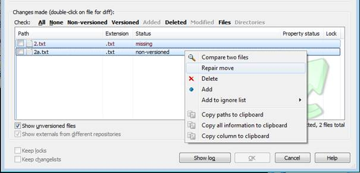
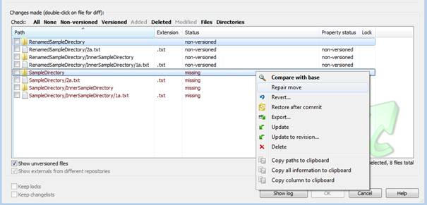
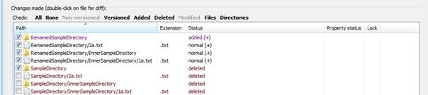

Save your history - TortoiseSVN and "Repair move" option.
TortoiseSVN has a function named simply “rename” which allows you to change the file name and keep the file history as well. But what if we change the file name for example during refactoring using Visual Studio? Are we fated to lose file history? Fortunately TortoiseSVN has an interesting option called “repair move”.
When we try to commit a directory which contains renamed file Tortoise pointing us that there are two changes. There is one missing file and one with non-version status.
When we select both files in the context menu there should appear additional position “Repair move”. This should fix our problem with renaming and file history. Tortoise will treat these changes as renamed and continue to keep file history.

This option works pretty well also in a scenario when we are moving file between dictionaries. 
It can also work if we renamed the directory.  
If we see the “Non-recursive commit of moved/renamed folders” dialog after trying to make commit, that means we have forgotten to select files marked by Tortoise with deleted status. The solution is to choose Cancel and select files on change list that we missed.


{kind=link}
{kind=link}
{kind=link}
{kind=link}
{kind=link}